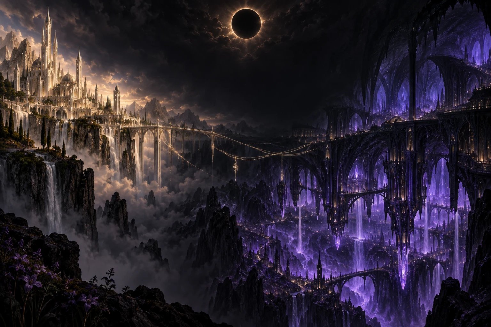
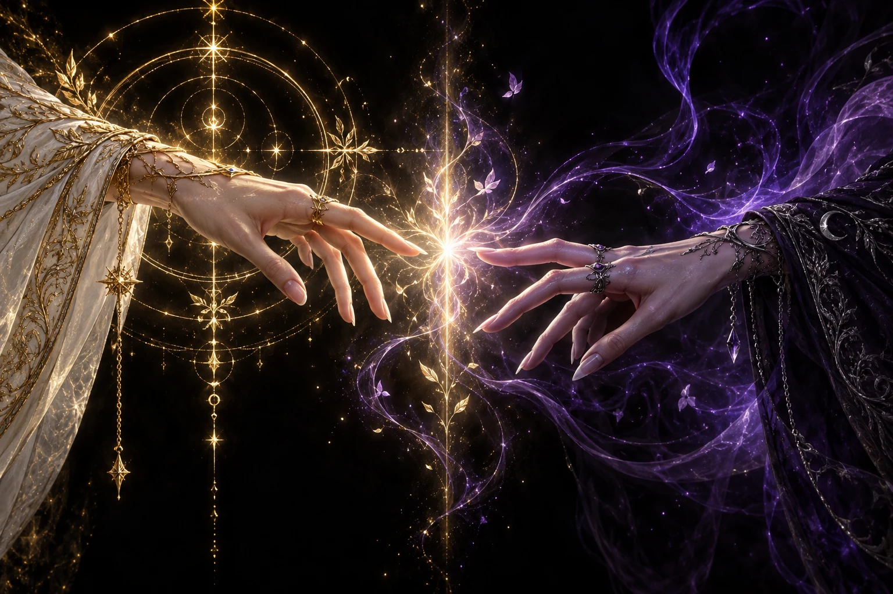
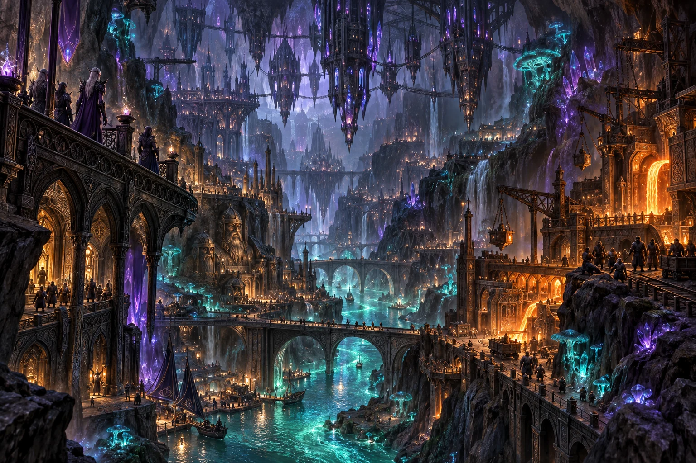

One blood.
Two worlds.
One bond.
The fey vanished. Their magic did not.
And what the blood remembers,
no kingdom can command.
A shared origin.
Two ways of being.
One people became two civilizations.
Neither has forgotten the divide.
Neither remembers the whole truth.
The Sun Elves
Radiant cities. Carefully woven bloodlines.
A civilization built to master uncertainty.
The Dark Elves
A shared city beneath the earth.
A people who make room for the unknown.
Magic is an
inheritance.
Long before solar temples or lunar rites, humans and fey had children together. Those descendants became the first elves.
Their power comes from blood.
Their differences come from culture.
Cultural traditions, not biological limits.

One power.
Different expressions.
Not a gift from the gods.
A remnant of the people who vanished.
Give the unknown a shape.
Precise wards, luminous spellcraft, and disciplined forms. Sun Elves refine their inherited power through structure and control.
Stone is not silent.
The depths are alive.
Dark Elven magic. Dwarven engineering.
Centuries of shared life, built into
the very bones of the world.

A living metropolis
Bridges cross luminous rivers. Towers descend from the cavern ceiling. Foundries glow beside forests of fungi.
A shared belonging
Dark Elves and dwarves live together, their craft and magic woven into a city neither could have built alone.
Under the lunar mask
A monthly celebration of renewal, where rank falls away and the continuation of the people belongs to the community.
Life beneath the earth ↗Their blood recognizes a connection
their civilizations deny.
A Sun Elf. A Dark Elf. A rare fey bond.
Fate makes the connection. They must choose what comes next.